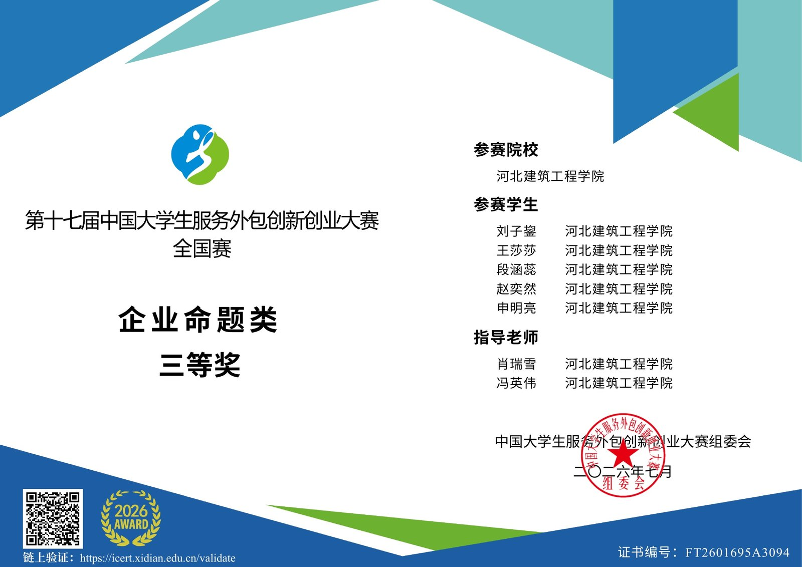
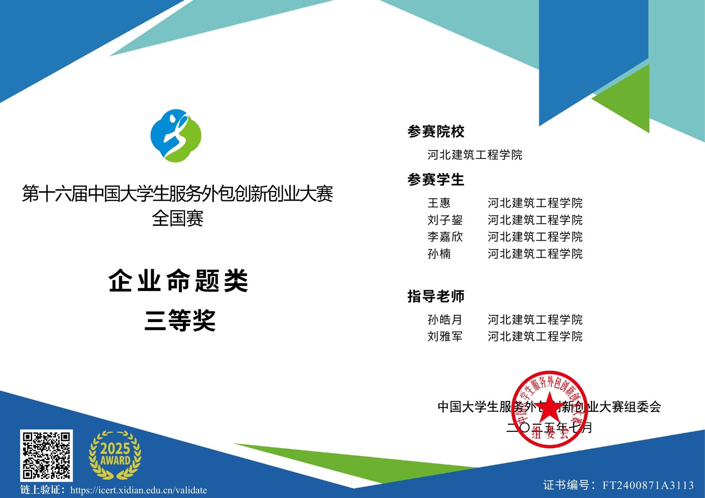
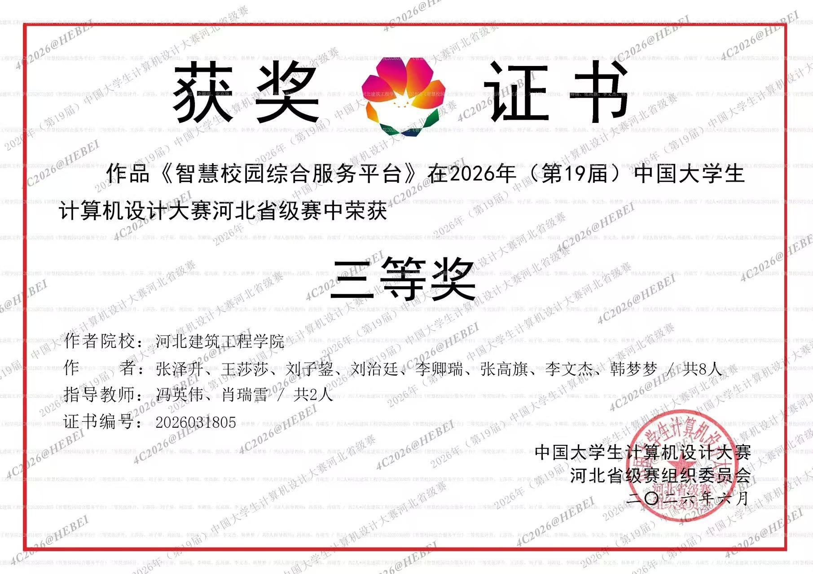
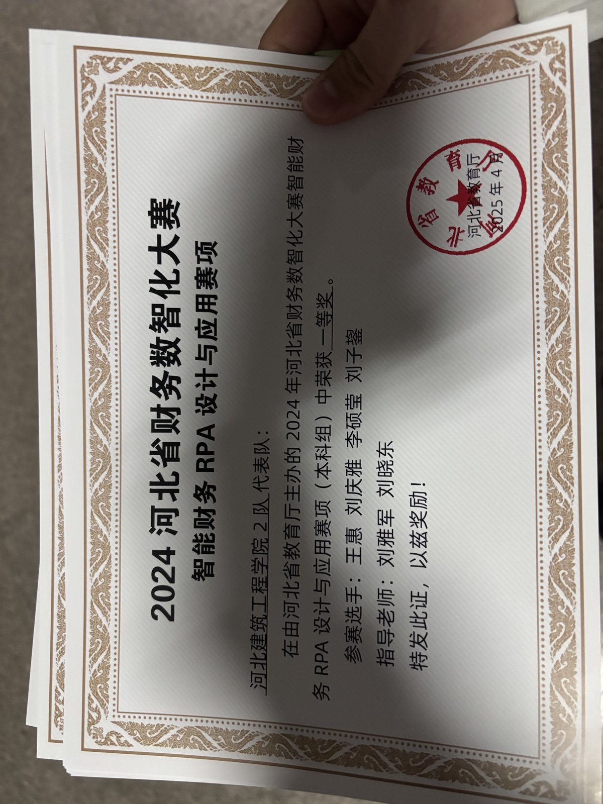

01 / SECURITY PLATFORM
主机安全系统部署与日志链路维护
在北京国御网络安全技术有限公司参与安全平台研发，负责日志采集模块的 Linux 环境部署与维护，使用 Nginx 配置前后端分离和反向代理，并配合完成服务问题定位。
部署与排障流程
- 01环境检查进程、端口、权限
- 02模块部署日志采集服务
- 03代理配置Nginx 访问链路
- 04问题定位日志分析与验证
2027 届 · 系统运维工程师方向
你好，我是刘子鋆。以 Linux 为基础，专注应用部署、故障排查、容器化与自动化；用开发能力理解系统，用工程意识保障运行。
运维观 SYSTEM OPERATIONS
我具备安全平台研发与后端工程实践经验，能够从操作系统、网络代理、应用日志、数据服务和代码逻辑多个层面分析问题，推动异常从发现走向闭环。
01核心能力
SYSTEM
进行服务部署、日志查看、端口排查、进程管理和权限配置，协助定位服务访问异常。
NETWORK
使用 Nginx、Caddy 完成前后端分离、反向代理、域名绑定和 HTTPS 证书配置。
DELIVERY
使用 Docker 进行应用容器化，结合 CI/CD 完成镜像自动构建与发布流程。
AUTOMATION
具备 MySQL、SQLite、ClickHouse 使用经验，并能使用 Python、Go 开发接口与辅助工具。
02工作方法
面对运行异常，我习惯沿着服务状态、网络链路、应用日志与数据层逐步缩小范围，在恢复可用后继续沉淀可复用的配置与流程。
OBSERVE
LOCATE
RECOVER
AUTOMATE
03实践经历
01 / SECURITY PLATFORM
在北京国御网络安全技术有限公司参与安全平台研发，负责日志采集模块的 Linux 环境部署与维护，使用 Nginx 配置前后端分离和反向代理，并配合完成服务问题定位。
部署与排障流程
02 / DELIVERY PIPELINE
在项目服务构建与部署中，基于 CI/CD 实现 Docker 镜像自动构建；使用 Caddy 完成域名绑定、反向代理和证书配置，并借助 Linux 工具解决部署与访问异常。
持续交付流程
03 / CAMPUS NETWORK
在网络技术社团期间，协助老师参与校园网主干链路运维及故障处理，积累网络保障和协同排查经验。
04经历
研发工程师
安全平台后端研发、Linux 部署维护、Nginx 代理配置、日志采集与数据服务优化。
后端研发
接口开发、数据库操作、前后端联调、Docker 构建和 Linux 服务部署。
核心成员
赛事环境搭建、赛前培训与校园网主干链路运维协助。
计算机科学与技术 · 本科
主修操作系统、计算机网络、数据库、Linux 开发等课程，GPA 3.34/5。
05开发能力
Python 与 Go 的开发经历，让我能够从请求链路、接口状态、数据库查询和应用日志等多个层面分析问题。
06软件著作权
三项软件成果覆盖科研管理、课程选课与校园服务。横向滑动或点击箭头切换，点击证书可查看高清原图。
07成果与荣誉




08联系我
求职方向：系统运维工程师